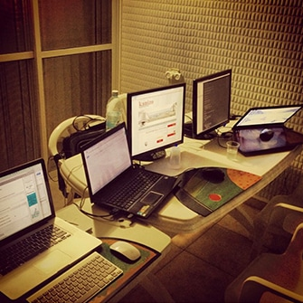
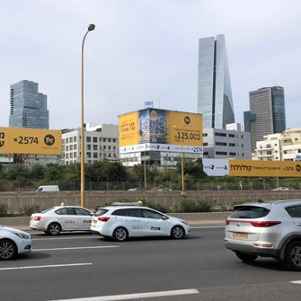
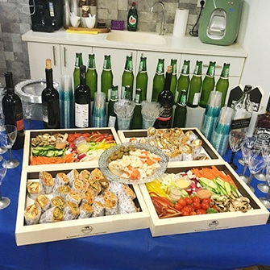

בהירות
אומרים פעם אחת. אם משפט לא מוסיף משמעות, הוא יוצא.
 בוא נדבר
בוא נדבר
אני שניר. לא סוכנות, לא משרד פרסום. מנהל פרפורמנס שמודד כל שקל ומזיז את המספרים שחשובים לעסק.
מ-2014 אני חי שיווק דיגיטלי. הקמתי וניהלתי משרד פרסום, ניהלתי תקציבי מדיה גדולים, וליוויתי עשרות מותגים, מאל על ועד עסקים מקומיים. למדתי דבר אחד שחוזר על עצמו: מה שלא נמדד, לא משתפר.
היום אני עובד לבד, חד. אני נכנס לחשבונות, מחבר את כל מערכות הפרסום לדוח אחד חי, מוצא איפה הכסף דולף, ומזיז את המספרים. רואה גרף ומבין את הבעיה. בונה סוכנים שרצים ברקע, מייעל תהליכים, וסוגר את הלולאה.
אם זה לא עובד, אני לא מפעיל.



כל החלטה נמדדת מולם.
אומרים פעם אחת. אם משפט לא מוסיף משמעות, הוא יוצא.
הכל נמדד על השקל. אם לא רואים את המספר, לא מפעילים.
בלי buzzwords, בלי מצגות. תוצאה או לא.
כל בעיה שנפתחת, נסגרת. לא נשארת תלויה.
תכתוב לי מה תקוע. אני אכנס לחשבונות, אבין איפה הכסף, ונדבר על מה שאפשר לזוז.
בוא נדבר ←